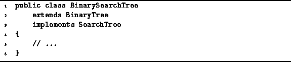

Data Structures and Algorithms
with Object-Oriented Design Patterns in Java
Data Structures and Algorithms
with Object-Oriented Design Patterns in Java
The class BinarySearchTree introduced in Program  represents binary search trees.
Since binary trees and binary search trees are topologically similar,
the BinarySearchTree class extends the BinaryTree
introduced in Program .
In addition, because it represents search trees,
the BinarySearchTree class
implements the SearchTree interface
defined in Program .
represents binary search trees.
Since binary trees and binary search trees are topologically similar,
the BinarySearchTree class extends the BinaryTree
introduced in Program .
In addition, because it represents search trees,
the BinarySearchTree class
implements the SearchTree interface
defined in Program .

Program: BinarySearchTree class.
 Copyright © 1998 by Bruno R. Preiss, P.Eng. All rights reserved.
Copyright © 1998 by Bruno R. Preiss, P.Eng. All rights reserved.